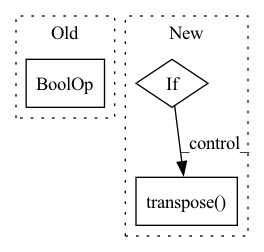

Pattern ID :20558
Before Change
label = load_image(label)
have_raw_channels = raw.ndim == 3
have_label_channels = label.ndim == 3
if have_raw_channels or have_label_channels :
raise NotImplementedError("Multi-channel images are not supported yet.")
shape = raw.shape
After Change
label = np.array(label[bb])
// to channel first
if have_raw_channels:
raw = raw.transpose( (2, 0, 1))
return raw, label
def __getitem__(self, index):In pattern: SUPERPATTERN
Frequency: 3
Non-data size: 3
Instances Fragment ID: 66365093
Project Name: constantinpape/torch-em
Commit Name: 388518bb703a99bee21678b2df8359c148fd09df
Time: 2021-08-05
Author: constantin.pape@embl.de
File Name: torch_em/data/image_collection_dataset.py
M Class Name: ImageCollectionDataset
N Class Name: ImageCollectionDataset
M Method Name: _get_sample(2)
N Method Name: _get_sample(2)
M Parent Class: torch.utils.data.Dataset
N Parent Class: torch.utils.data.Dataset
M File Name: torch_em/data/image_collection_dataset.py
N File Name: torch_em/data/image_collection_dataset.py
M Start Line: 85
M End Line: 87
N Start Line: 100
N End Line: 120
Before Change
if d == 2 or d == 3:
p = p.transpose(-1, -2)
p = self.linear_intpl(p)
if d == 2 or d == 3 :
p = p.transpose(-1, -2)
p *= mask
After Change
p[tmp_mask] = torch.roll(p, 1, dims=-1)[tmp_mask]
// Interpolate pitch.
if p.dim() == 1:
p = self.linear_intpl(p)
else:
p = self.linear_intpl(p.transpose(-2, -1)).transpose( -2, -1)
p *= mask
// Compute phase.
q = torch.nan_to_num(torch.reciprocal(p), posinf=0) Fragment ID: 66365088
Project Name: sp-nitech/diffsptk
Commit Name: 8554148138fd5ebcbc70e0af9d283a62c0175594
Time: 2023-01-30
Author: takenori.yoshimura24@gmail.com
File Name: diffsptk/core/excite.py
M Class Name: ExcitationGeneration
N Class Name: ExcitationGeneration
M Method Name: forward(2)
N Method Name: forward(2)
M Parent Class: nn.Module
N Parent Class: nn.Module
M File Name: diffsptk/core/excite.py
N File Name: diffsptk/core/excite.py
M Start Line: 84
M End Line: 93
N Start Line: 87
N End Line: 91
Before Change
for detected in stitch_list:
for actual in gt_stitches[pattern_idx]:
// order-invariant comparison of stitch sides
if (all(detected[0] == actual[0]) and all(detected[1] == actual[1])) \
or (all(detected[1] == actual[0]) and all(detected[0] == actual[1])) :
correct_stitches += 1
// precision -- how many of the detected stitches are actually thereAfter Change
for pattern_idx in range(stitch_tags.shape[0]):
stitch_list = PatternDataset.tags_to_stitches(stitch_tags[pattern_idx]).to(gt_stitches.device)
num_detected_stitches = stitch_list.shape[1] if stitch_list.numel() > 0 else 0
if not num_detected_stitches: // no stitches detected -- zero recall & precision
continue
num_actual_stitches = gt_stitches[pattern_idx].shape[-1]
// compare stitches
correct_stitches = 0
for detected in stitch_list.transpose( 0, 1) :
for actual in gt_stitches[pattern_idx].transpose(0, 1):
// order-invariant comparison of stitch sides
correct_stitches += (all(detected == actual) or all(detected == actual.flip([0]))) Fragment ID: 66365089
Project Name: maria-korosteleva/garment-pattern-estimation
Commit Name: 2c10fe34bdc71a0db2ced1efad3afb7a62bd3b25
Time: 2020-11-02
Author: mariako@kaist.ac.kr
File Name: nn/metrics.py
M Class Name: PatternStitchPrecisionRecall
N Class Name: PatternStitchPrecisionRecall
M Method Name: __call__(3)
N Method Name: __call__(3)
M Parent Class:
N Parent Class:
M File Name: nn/metrics.py
N File Name: nn/metrics.py
M Start Line: 145
M End Line: 163
N Start Line: 182
N End Line: 201